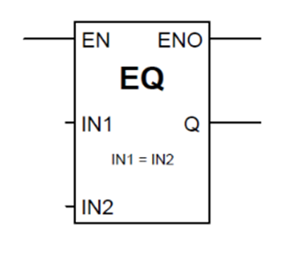

Equal
A Compare instruction in PLC programming is a command used to compare two values and determine their relationship, such as equal to, greater than, or less than.
- Function: Evaluates a condition between two operands.
- Output: Boolean (TRUE or FALSE) depending on whether the comparison condition is met.
-
Types:
- Equal (=) – Checks if two values are equal.
Where it’s used
- Comparing integers, real numbers, or bits.
- Typical in decision-making or branching logic in PLC programs.
Example:
- Compare the value of a sensor with a setpoint.
- Check if a counter has reached a specific number.
Syntax / Representation
In LAD/FBD:
- The instruction is represented as a comparison block:
|--[ = ]--|
- Inputs: IN1 and IN2 (the two values to compare)
- Output: Q (TRUE if IN1 = IN2, otherwise FALSE)